Understand your goal
Are you exploring everyday personal care, digestive wellbeing, or questions about hormonal health? Begin with the topic, not a product promise.
Explore thoughtful product guides, ingredient explainers and personal-care ideas—without the hype. Start with a topic that matters to you, learn what the labels say, then decide whether a product deserves a closer look.
Use this short path to move from a question to useful information, then compare products with realistic expectations.
Are you exploring everyday personal care, digestive wellbeing, or questions about hormonal health? Begin with the topic, not a product promise.
Check the ingredient list, amounts, evidence limits, warnings and who may need professional advice before using a product.
Review the retailer’s current label, price, delivery, return terms and suitability. Follow a purchase link only if it fits your needs.
These are starting points for research, not medical recommendations. Open a guide first to understand the ingredients and limitations.

A gentle intimate-care wash. Check the current ingredient list and directions, and choose products that suit your skin and personal preferences.
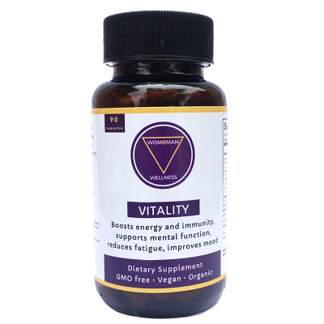
A guide to the product’s listed ingredients and the evidence limits around supplements marketed for PCOS support. It is not a substitute for diagnosis or treatment.

Explore the label, strains and intended use, and why probiotic effects depend on the specific strain and product—not just the word “probiotic”.

A practical look at body-oil ingredients, everyday moisturising and the label details to check for your own skin preferences.
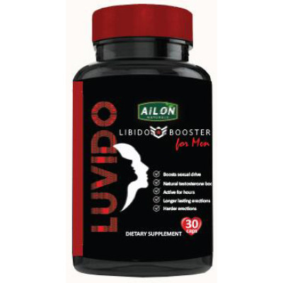
Review the listed herbs, the limits of the available evidence and important safety questions. The product's claims should not be treated as guaranteed outcomes.

A closer look at gentle cleansing, the product label and how to compare a cleanser with your skin’s needs and preferences.

Explore how hyaluronic acid is used in skincare, what the product label tells you and what to check before choosing a serum.

Review the product’s listed ingredients and directions, and compare its claims with realistic skincare expectations.
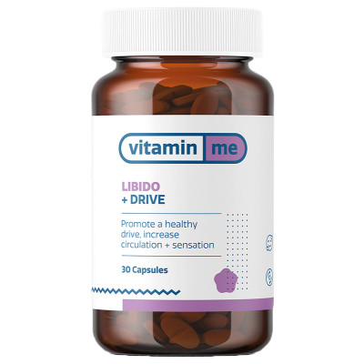
An evidence-aware look at the listed herbal ingredients, the claims made for the product and important safety questions to consider.

A 60-capsule multivitamin and mineral formula featuring vitamins, minerals, plant polyphenols and R-alpha-lipoic acid. Check the current label and price, and consider whether its ingredients suit your needs.
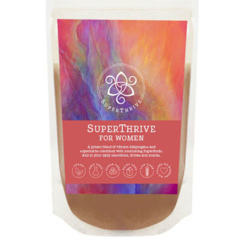
A 200g powdered blend featuring mesquite, cacao, tulsi, chasteberry, ashwagandha, moringa, schisandra, astragalus and functional mushrooms. Check the current ingredient label and consider the evidence and suitability for your needs.
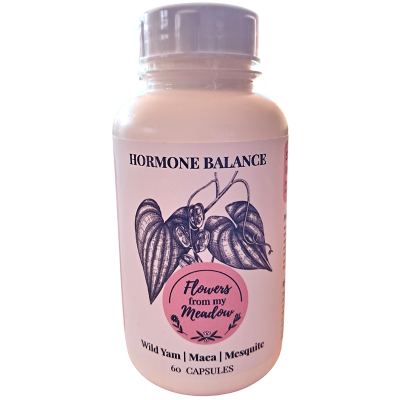
A plant-based 60-capsule blend with wild yam root extract, mesquite and maca. The retailer lists a 30-day supply; check its current label, price and directions before deciding.
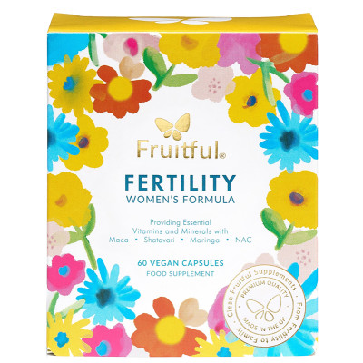
A 60-capsule formula combining vitamins, minerals and botanicals including maca, shatavari, myo-inositol, moringa, NAC and CoQ10. The retailer lists a 30-day supply; check the current label and price before deciding.
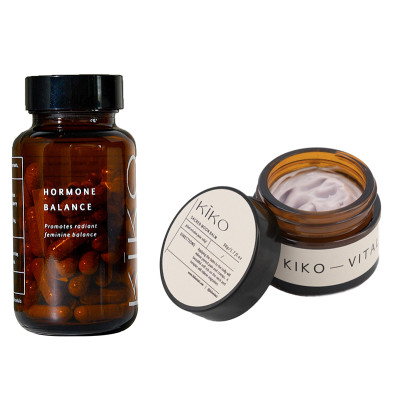
This set pairs Kiko Vitals Hormone Balance capsules with Moon Balm, a topical balm. Review the full ingredient lists and directions, and keep expectations realistic: product claims are not proof that it treats menstrual or hormonal conditions.
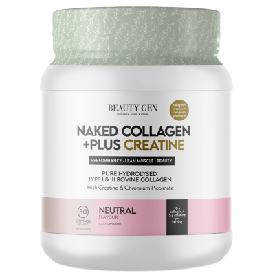
A 450 g powder combining collagen with creatine. Check the retailer’s current ingredient panel, serving size and directions, and compare the formula with your own preferences before buying.
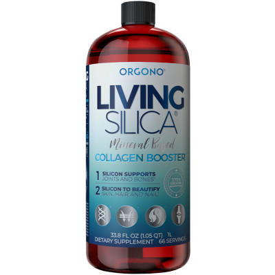
A beauty supplement marketed around silica and collagen support. Check the current ingredient list, serving directions and retailer information, as formulations and product claims can change.
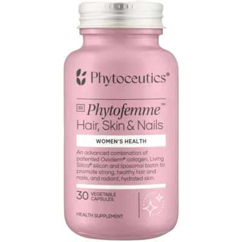
A beauty supplement formulated for hair, skin and nail support. Check the retailer’s current ingredient panel, serving directions and product information before deciding, as formulations and claims can change.
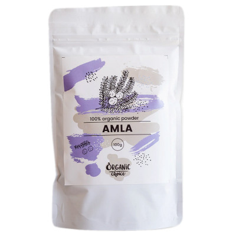
A 100 g amla powder made from Indian gooseberry, traditionally used in food and herbal wellness practices. Check the current pack details and recommended use, and treat broad beauty or wellness claims with care.
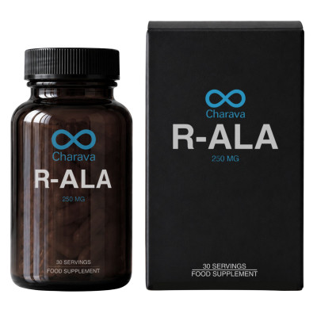
A supplement containing alpha-lipoic acid, an antioxidant compound. Check the current label for the amount per serving and directions; supplement claims should not be taken as proof that it prevents or treats a medical condition.
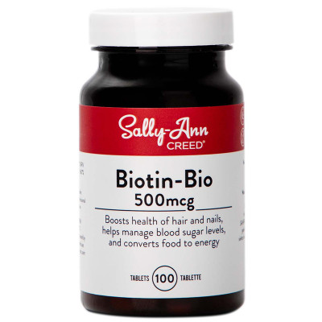
A 100-tablet biotin supplement marketed for hair, skin and nail nutrition. Check the current label for the biotin amount and directions; extra biotin is not necessarily helpful if you already get enough.
Affiliate disclosure: Woelag may earn a commission if you buy through a retailer link, at no extra cost to you. Product information, prices and availability can change. This page is general information, not medical advice. For persistent symptoms, pregnancy or breastfeeding questions, medication use or an underlying condition, speak with a qualified healthcare professional.
Read the guide first, note any questions, then check the retailer’s current information before deciding. You can also browse the wider library of wellness articles.